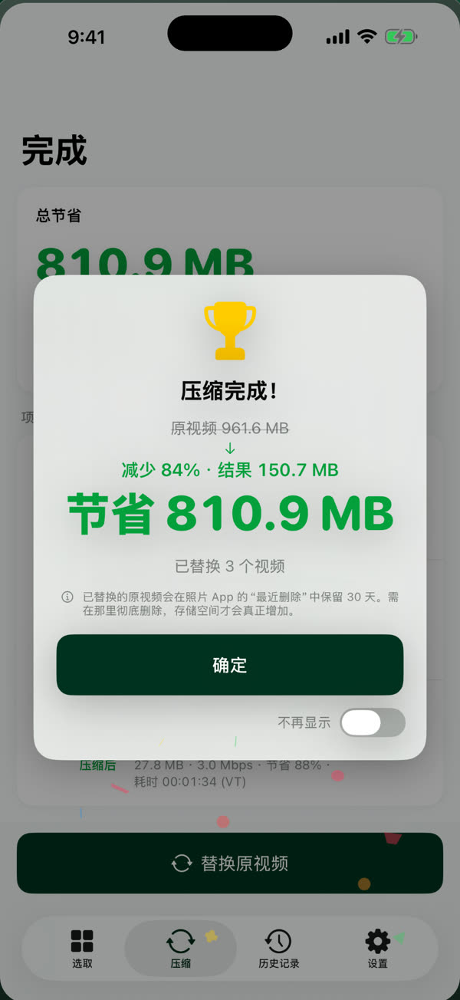
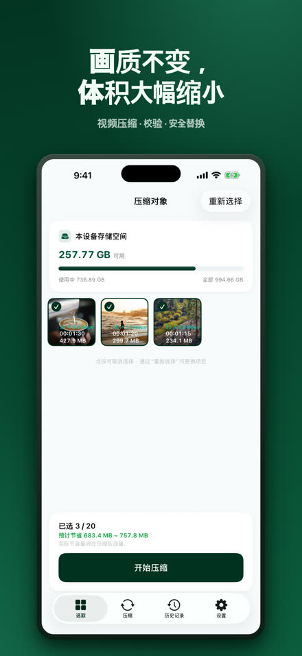
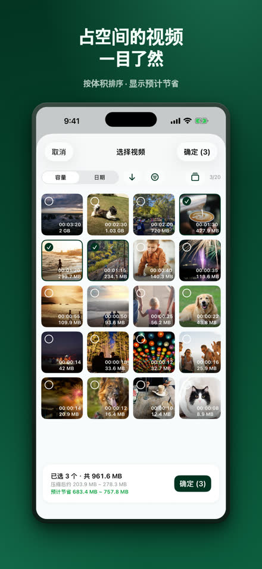
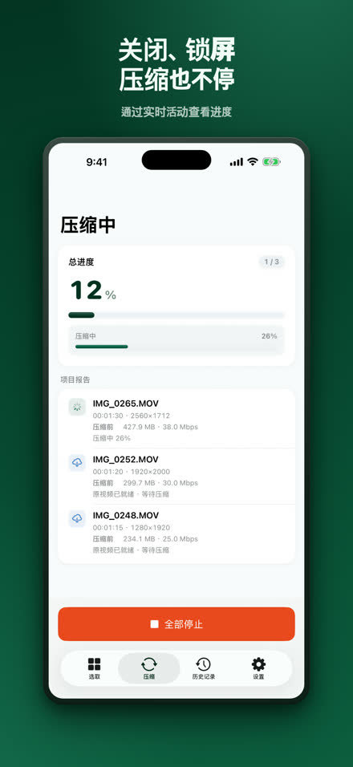
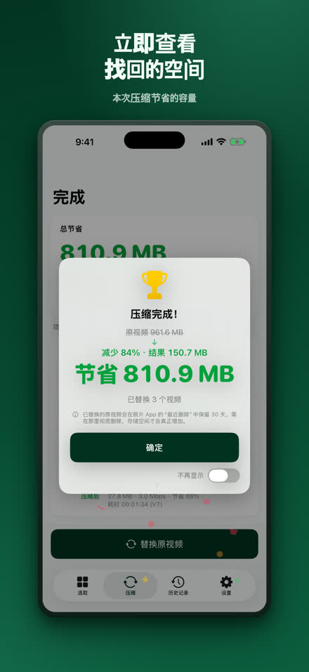
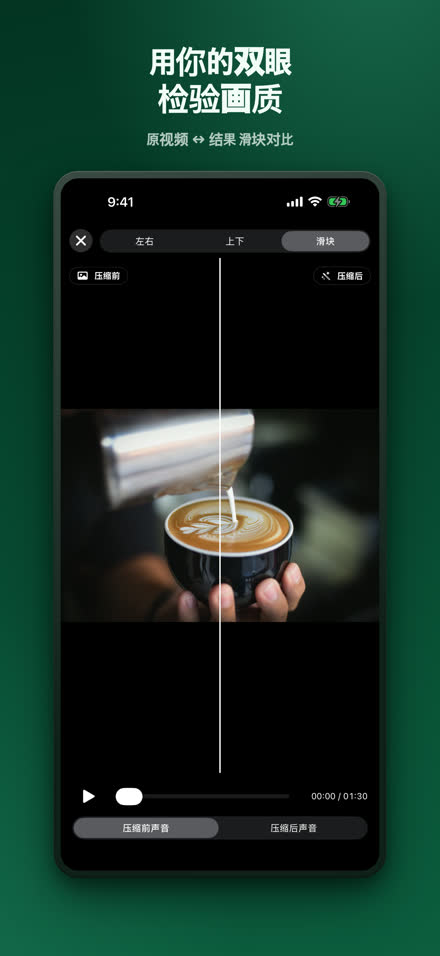
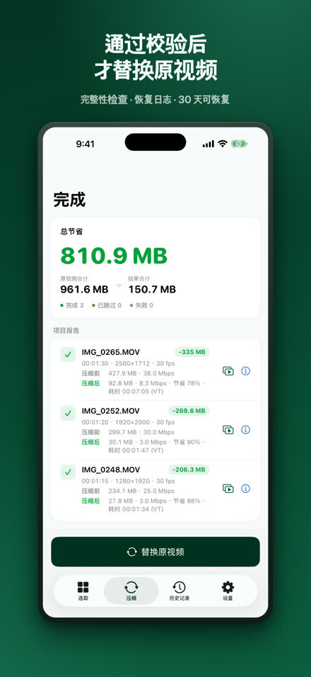
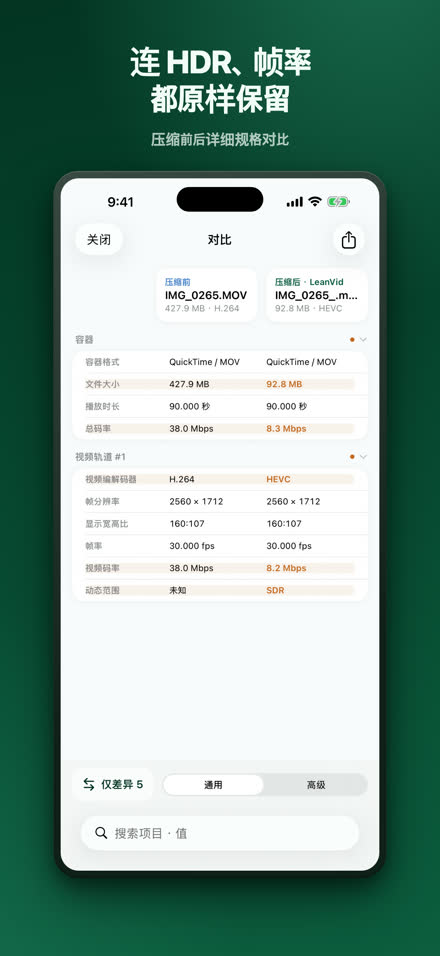
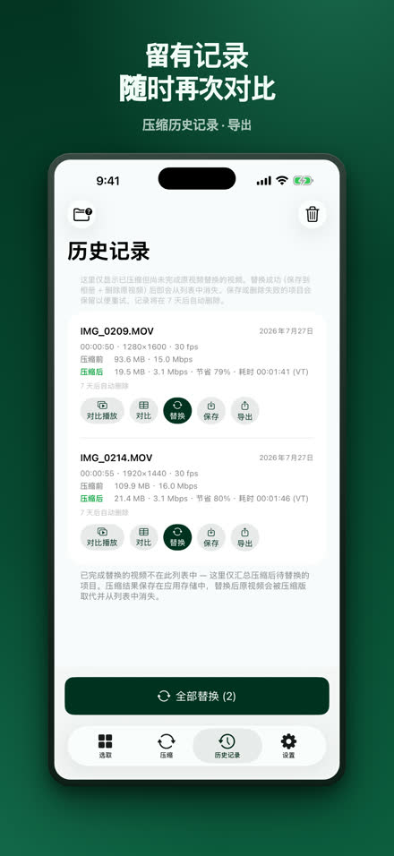

LeanVid
压缩视频，保留画质。
LeanVid 只降低比特率来压缩照片图库和“文件”应用中的视频——分辨率、帧率、色彩和 HDR 保持不变。每个结果在替换原片之前都会经过验证，照片图库中的原片可在 30 天内恢复。
在 App Store 下载iOS 18 或更高版本 · iPhone 和 iPad（也能作为 iPad App 在 Apple silicon Mac 上运行）

同一段视频，只占一小部分空间。
原视频3:341.24 GB
LeanVid3:3499.4 MB
约小 92%
我们的实测：一段 3 分 34 秒的屏幕录制。结果因视频而异。
选好、压缩、确认、替换。








所需功能，一应俱全。
画质保留压缩
仅调整比特率，保留 HDR 与所有轨道
经过校验的安全替换
完整性校验、恢复日志、系统确认
眼见为实
并排与滑块对比，完整规格表
“文件”应用与更多格式
也可以选择“我的 iPhone”和 iCloud 云盘中的视频；MKV、WebM、AVI、WMV、FLV、TS、MPG、VOB 文件会在设备上转换为 HEVC/MP4
无需等待
后台压缩，并通过 Live Activity 显示进度（iOS 26 及更高版本）；更早的版本会在你回到应用时自动继续
本机处理
视频在你的 iPhone 上压缩，绝不上传；无需账户 — 隐私